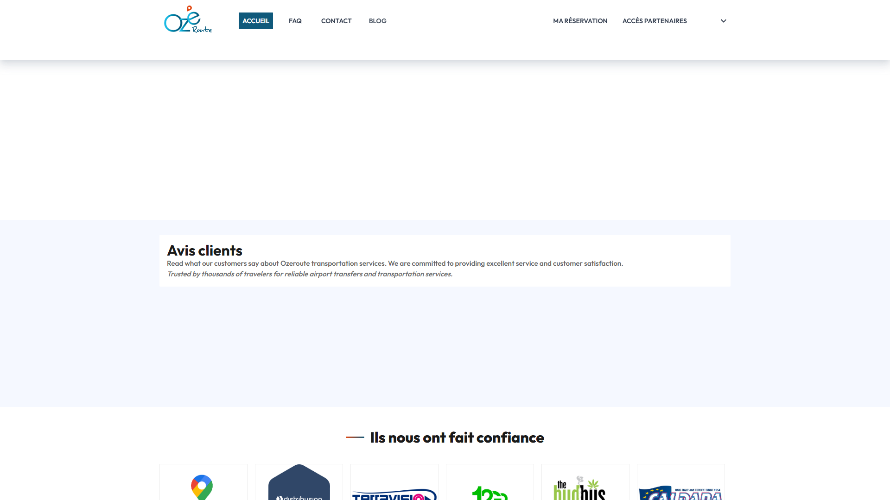

Rapport d'Exécution & d'Audit Playwright E2E
Plateforme Ozeroute • Validation continue, détection de régressions et tests de résilience
Détail des Scénarios Configurés & Audits Data-Driven Engine
Parcours Nominal de Réservation Navette (Paris -> Aéroport CDG)
Validation du tunnel complet depuis la page d'accueil jusqu'à la sélection d'une offre navette et l'accès au checkout

Flux d'Accès Référencé (Google / Deep Link Pré-encodé Base64)
Validation du chargement direct de la grille tarifaire via paramètres de recherche injectés dans l'URL

Parcours Réservation Aller-Retour avec Date de Reprise
Validation du formulaire avec activation de l'option aller-retour et saisie d'un retour décalé

Parcours de Réservation Internationalisé (Locale EN)
Contrôle de l'affichage du formulaire, de la persistance de langue et du rendu des composants anglophones

Audit Faille Métier - Trajet intra-aéroport 0 km (Orly -> Orly facturé 31,25 €)
Vérification du comportement d'intégrité lorsque les adresses de départ et d'arrivée sont identiques (Réf: Rapport Chapitre 2.2)
Audit Ergonomie Responsive CSS à 960px (Troncature Date et Passagers)
Mesure des conteneurs Flexbox et capture haute résolution de la troncature des dates et libellés (Réf: Rapport Chapitre 2.3)
Audit Intégrité Console - Crash Widget Elfsight (APP_VIEWS_LIMIT_REACHED)
Surveillance des erreurs non interceptées et dépassement de quota sur le widget d'avis Google (Réf: Rapport Chapitre 2.4)

Audit Réseau HTTP - Détection 404 sur Endpoint /v1/common/promo
Interception réseau lors du chargement pour consigner les requêtes 404 non maîtrisées (Réf: Rapport Chapitre 2.5)
Audit Qualité Logicielle UI - Faute de Français en Production
Validation du décompte passagers à 0 adulte et capture du message d'erreur 'Faut avoir au moin un adulte' (Réf: Rapport Chapitre 2.6)

Test Résilience Réseau - Simulation Filtre Adblocker sur Stripe Radar
Vérifie la robustesse du tunnel de paiement lors du blocage client de r.stripe.com (Réf: Rapport Chapitre 3.3)